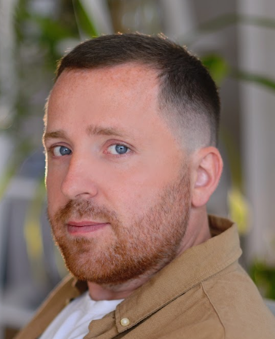

Dmytro Kozlovskyi
QA Engineer
Place of residence: Odesa
Contact information:
Tel: +380939104291 (include all messengers)
E-mail: qa.dmytro87@gmail.com
Linkedin
Main goal
Get QA engineer position, where I can apply professional knowledge and skills with the possibility of
professional and career growth.
Technical skills
- Understanding of Software Testing Theory
- Understanding of Testing Principles
- Understanding of types of Testing
- Tools: Charles, Web Inspector, Postman, Fiddler, PICT
- API testing
- VCS: Git
- CI: Jenkins
- Database: MySQL
- QA/QC tools: Jira, Mantis, Redmine
- TMS: Test Rail
- Basic knowledge: HTML
- Others: JSON, XML
Source of knowledge in the field of software testing:
Course IT Life “Software Testing” - July 2024 – November 2024
- manual QA testing
- strong knowledge in theory of testing, manual testing, process of testing
- strong knowledge in theory of testing types of testing
- strong knowledge in SDLC
- strong knowledge in methodology of software development: Waterfall, Scrum/Agile
- experience in tracking system: Jira
- strong knowledge about bug life cycle
- skills in writing test cases, requirements, bug reports
- good knowledge in HTML, CSS, JS
- basic knowledge in web testing (client-server model, DevTools console, Selenium)
- strong PC/mobile user (Windows, Android, iOS)
- strong knowledge in PC hardware
- skills in Excel, Google sheets/documents
- basic knowledge in SQL (can create simple bases and use simple queries)
Practical test marathon by Roman Yakimchuk – January 2025
- strong skills in test design techniques
- familiarity with tracking system - Jira
- familiarity with test managing system – testomat.io
- basic skills in SQL (creating bases and use queries)
- strong knowledge in writing test plan, test strategy
- strong knowledge in all types of testing
- strong knowledge in web testing (API, Chrome DevTools)
- familiarity with postman
Education:
- Kyiv, National University of Trade and Economics
Specialty "International Tourism", Bachelor degree 2004-2009
Languages:
- Ukrainian - native
- Russian - native
- English - Upper intermediate